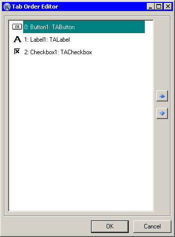

Tab order is the order which a control's focus switch each time you press Tab button. Because in AutoIt the switching order is the same as control's creation order, the use of this editor will also affect controls' creation order in resulting code.
|
You can change order with drag'n'drop or with arrow buttons at right side of pane. |
 |
Note, that in Container controls (TabSheets and Group control) numeration is independent from global form TabOrder numeration. TabOrder count is start from 0.
When you select some control and open TabOrder editor, you can change order for all controls that have the same parent as selected control. You can easily see the hierarchy of objects in the Objects Tree View, where each node means parent level raised up.
This window is resizeable.